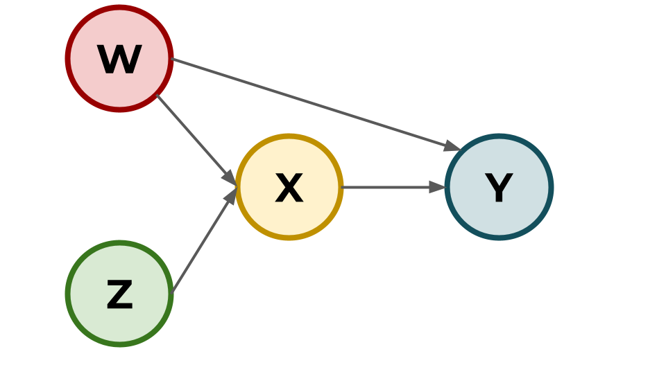

Mendelian randomization for dummies
The AI world is getting a bit bleak lately, so I’m taking a break from writing about alignment and RL this weekend to jump into another, more cheerful topic: death.
Specifically, I’m going to discuss how scientists figure out why people die. This is a fundamental question to medicine, biology, and forensics. Figuring out why people die is usually an important step in stopping them from dying. And it can be difficult in the same way that answering any “why” question is difficult. If you slip on a banana peel as you’re walking along the sidewalk then fall into oncoming traffic and die, should your death be attributed to poor urban sanitation, or excessive motor vehicle speeds?
Understanding why one person died may open up a philosophical quagmire, but the mechanisms can usually be understood by a determined coroner and biochemist. Understanding why millions of people die is much harder. If you contort population statistics for long enough, you can find a correlation with virtually any variable you want and mortality. This is the cause of the constant whiplash any attentive reader of popular science publications experiences as chocolate, butter, and eggs are declared by news media to be worse than cyanide one week, and a foundational component of a balanced diet the next. The gold standard that scientists work toward, however, is causal relationships.
Causal relationships in physics are straightforward and simple enough that they can be expressed as low-degree polynomials. But biologists study systems with many more moving parts than a ball rolling down a ramp, and these moving parts generally do not magically cancel out into a precise quadratic formula. Worse, the visible components of these systems usually interact nonlinearly and can form complex feedback loops, which means that many phenomena we might want to study devolve into hopeless chicken-and-egg problems.
Main problem: in biology, the mechanisms are trillions of tiny molecular machines that have developed over the course of evolution to perform very specific, non-random functions. The machines are too complicated to model as random noise like a physicist would, but too numerous to characterize explicitly like a chemist would.
Solution is to try to fit very simple models (usually linear) to show that doing something leads to a particular outcome, doing more of it leads to more of that outcome, and that if you keep everything constant but stop doing the thing, you will reduce the outcome. Ultimately, the outcome we care about is dying.
Some examples of correlations that seem like they should be causal but haven’t held up: eating fish that have lots of omega-3s is associated with lower heart disease (and ACM?). But people who take omega-3 supplements don’t live longer than people who don’t. Oily fish that taste good are expensive, so people who eat them tend to be rich or very committed to their health. Both of these things are associated with positive health outcomes. Even if you control for socioeconomic status, “salmon is healthy” is such a pervasive message that a person who eats salmon is probably doing a lot of other good things for their health. If you try to fix this by mailing people a box of salmon every week to eat, you still haven’t fixed the problem because people who don’t like to eat healthy foods might still not consume it. Exercise is an even more difficult proxy – people who are depressed, sick, or injured don’t exercise. So you have to account for what’s known as the “sick quitters” effect in addition to the fact that people who exercise are generally richer and have better self-control than people who don’t.
One strategy is to measure ‘intention-to-treat’. This is the strategy used by a lot of the evidence supporting a Mediterranean diet, where they mail people vats of olive oil and then see if the people who receive the vats die less often than people who didn’t. So far, it seems like being mailed large containers of olive oil does make you live longer, which might be something to consider for readers who are considering substituting their shipments of questionably-provenanced peptides.
So how are we supposed to figure out what is killing us? If any lifestyle factor is hopelessly confounded, what hope do we have of figuring out how to live longer? Is there anything we can measure that serves as a truly independent random variable?
The answer lies in our genes. No matter how much you exercise, the genetic code you were assigned at birth stays (approximately, modulo viral infections or CRISPR gene therapy treatments) constant throughout your life. Although different populations have different prevalences of various alleles, nothing that a person does will affect which ones they inherited. Some genes do indirectly affect behaviour, but most(?) don’t. The genes that control cell division, dna repair, cholesterol synthesis, etc. can be fairly straightforwardly localized to those specific functions. If you find a gene that makes the liver clear certain lipoproteins more slowly, it is probably not also causing the bearer to crave bacon. This is the basis of Mendelian Randomization.
The math behind mendelian randomization is straightforward if you come at it from machine learning world. The idea is that you have three sets of variables: outcomes \(Y\), features \(X\), and instrumental variables \(Z\). An instrumental variable is statistics-speak for a variable that you’re very confident doesn’t have any hidden confounding with the thing you want to predict. You then assume you have a causal graph with the following structure.

The goal is to figure out what the relationship is between \(X\) and \(Y\), but in the above causal graph \(W\) acts as a hidden confounder that prevents us from directly measuring the effect of \(X\) on \(Y\) by just looking at these two variables. \(W\) is usually impossible to measure, which is why we want a model that ignores it. For example, it might be a person’s commitment to doing unpleasant things that their mother said were healthy. Instead, we want to use \(Z\), which is independent of \(W\), as a proxy for \(X\), and then use that estimate to predict the effect of \(X\) on \(Y\).
We could just learn a regressor that maps \(Z \rightarrow Y\), which would tell us how \(Z\) affects dying. So we could say “having allele GHWEIK4893 of gene VCBUI-1 causes you to die 5 years earlier on average”. But that’s not very interesting scientifically: we can’t change your genes after you’re conceived (yet), and we also would like to know what the gene is doing that is killing people. But if you know roughly what protein the gene encodes, and how different alleles lead to different levels of that protein, you can figure out how that protein affects death by first translating gene to protein, and then using the inferred protein level to predict death.
This is going to give a worse estimate of the correlation between the feature and outcome, but a better estimate of the causal role of the feature in the outcome.
Practically speaking, all of this just means you do a 2-phase linear regression. First, you fit a linear model \[\mathbf{X} = \mathbf{\gamma Z} + \mathbf{c_X} + \mathbf{\epsilon_X}\]
with parameters \(\mathbf{\gamma}\). This is how you guess what – all else being equal – the feature would be due to the effect of your instrumental variable. Then you fit a second linear model \(\mathbf{\beta}\) using OLS or elastic net regression to \[\mathbf{Y} = \mathbf{\beta X} + \mathbf{\epsilon_Y} + \mathbf{c_Y}.\]
If \(\beta\) isn’t a good predictor of \(Y\), then either your instrumental variable isn’t as good of a proxy for the feature as you initially thought, or there isn’t actually a causal relationship between the feature and the outcome (or else there was yet more hidden confounding that you failed to account for, but for things like lipoproteins this is less likely as I don’t think anyone has found an association between e.g. wealth and ApoE status). If it is a good predictor of \(Y\), then you’ve established causality (assuming nobody finds a confounder between your instrumental variable and outcome). Yay!
The Framingham Heart Study is a landmark in clinical epidemiology. It has studied the residents of the town of Framingham, Massachusetts for almost 80 years, conducting DNA, blood, and other samples from them throughout their lives and tracking their major life milestones (i.e. birth, heart attack, and death). It’s responsible for most of what we now know about heart disease, yielding household names like the Framingham Risk Score. Because participants had their genomes sequenced, researchers could look at whether having certain genes that led to different lipoprotein compositions and levels predicted who would get heart disease.
This paper conducted a meta-analysis of several studies, looking at 9 alleles of 6 genes and finding that lower lifetime LDL-C exposure (as determined by genetic risk factors) reduced the risk of coronary heart disease. In other words, if you equalize for all aspects of lifestyle and just look at two populations with different LDL-Cs due to random genetic luck, the ones with higher LDL-C die more. This is important because it means that if you pharmacologically reduce LDL-C, you will also reduce risk of heart disease. As it turns out, LDL-C is very easy to reduce pharmacologically with minimal side effects, which is why 35% of US adults take statins.
Framingham was also responsible for showing that although HDL-C (the “good” cholesterol) correlates with lower cardiovascular risk, it doesn’t seem to have a causal effect. Having a genetic mutation that increases your natural level of HDL above a baseline doesn’t seem to have the same protective effect as having high observed HDL. This makes sense since one big driver of HDL levels is exercise, which is beneficial to health for a wide variety of reasons. Pharmacological interventions that increase HDL, in contrast to LDL-lowering medications, tend not to show improvements (some candidate drugs in this area increased blood pressure and as a result actually increased risk of heart disease).
When I first learned about instrumental variables regression, it was in a reinforcement learning class and the motivation was basically non-existent (we wanted to fit linear regression models on samples from gridworlds better). Little did I know that this was the exact same method used to cut heart disease mortality by about two thirds over the past 60 years. So as we question whether there will be space for humans in the era of AGI, let us at least rejoice in the fact that, thanks to instrumental variable regression, we will probably not die of heart disease before that happens.